All spatial objects used by LandSerf are fully georeferenced. This allows rasters and vectors to be
co-registered when overlaying one on the other. To display this information, select the relevant objects from
the thumbnail view and select either Info->Summary Info or the
button. This displays the title,
bounds, map projection information, notes and colour table associated with the spatial object (see figure below).
This information may be changed by selecting the relevant item from the Edit menu.
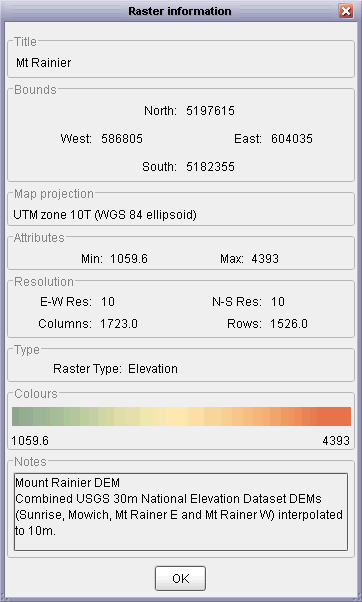
Spatial object summary information.
Univariate statistics for a raster can be calculated by selecting the Info->Statistical summary
menu item. This will calculate measures of average, dispersion, spatial autocorrelation (local roughness) and
fractal dimension. You also have the option of displaying a variogram that indicates how roughness changes with scale.
The data points that make up this variogram can be exported as a simple text file for use in spreadsheets etc. by
clicking the Export variogram button.
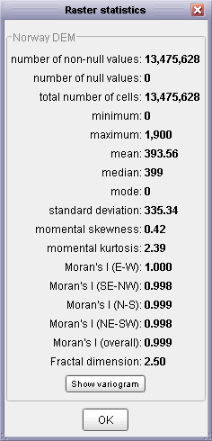
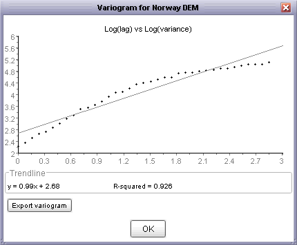
Raster statistical summary and log-log variogram.
More detailed information about raster and vector attributes can be found by querying the spatial object
interactively with the mouse. To do this, place LandSerf in Query Mode by either selecting the
Info->Query Map menu item or by toggling the
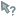 button. By moving the mouse
over the main LandSerf display, location and attribute associated with the current mouse position will
be displayed at the bottom of the main window. A permanent record of these query results are displayed
in the LandSerf console and recorded in the LandSerf log file
(see Chapter 1 - Introduction).
If a spatial object is associated with an attribute table (see Chapter 3 - Creating,
Editing and Transforming Data for more details), the value displayed will be determined by the
active attribute selected from that table. This allows textual as well numerical values to be
displayed. If a secondary raster or primary vector is selected, clicking on a location while in query mode will display
both these attributes while highlighting the selected vector object on screen.
In addition to query with a mouse, the numerical value of each raster cell can be displayed directly in the main
LandSerf window. To activate numerical display, select Numeric raster values in the Display
menu. On displaying the raster, numeric values will only appear if individual cells are large enough to display them.
You may therefore have to zoom in to see them displayed. For floating point values, the number of decimal places displayed
will depend on the size of each raster cell in the display window.
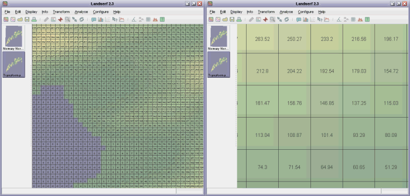
Numeric raster display showing higher precision when zoomed in (right).
To query more than one raster cell value at a time, cross-sectional profiles can be displayed by selecting
either the Info->Profile menu item or the
button. By clicking somewhere on the main raster display and dragging
the mouse to another location, linear cross-sections are displayed in the profile window. The labels
along the X-axis give the distance from the first point in the profile in ground units. The number of
sample points along the profile can be controlled by the slider at the bottom of the profile window.
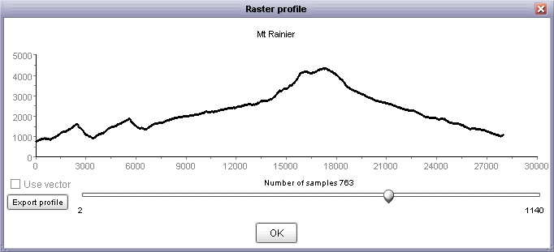
Interactive elevation profile output.
If you have a vector map selected as a primary vector in addition to a raster elevation model, you have the option of
viewing the profile along the selected vector. To do this, select the Use vector option then click on the
chosen vector in the main LandSerf window. This vector will be highlighted on screen and the profile updated accordingly.
As with all graph output, you can export the distance/elevation values as a simple text file for handling by other software
(e.g. spreadsheets) by clicking the Export profile button.
It is possible to query various surface parameter values interactively using the mouse. To do this,
make sure a DEM is displayed and select the Info->Multi-scale query... from the Info menu.
This opens a dialogue box asking for the window scale and parameter type to be selected (see
Chapter 7 - Performing Analysis on Surfaces for more details on these parameters).
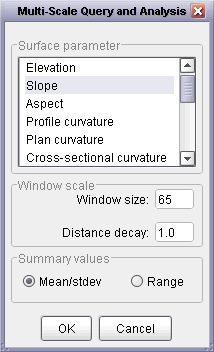
Multi-scale query options.
By dragging the mouse over the main display, output similar to that shown below is produced. The graph
shows the value of the selected parameter (slope, curvature, feature type etc.) on the vertical axis,
and the spatial extent over which the parameter was measured on the horizontal axis. Thus the curve produced
shows how the given parameter varies with scale.
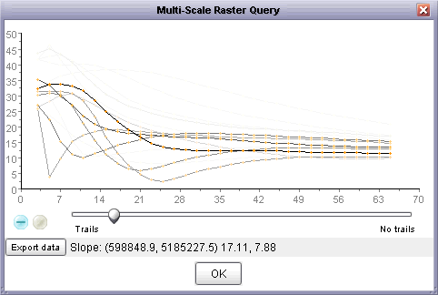
Interactive multi-scale query output with negative curve accumulation.
The numeric values at the bottom of the window represent the location of the point being queried and
either the mean and standard deviation of the queried parameter over all scales, or its minimum and
maximum vales, depending on what was selected in the Query Options window. If aspect is
selected as the parameter to query, the circular mean and standard deviation are displayed. If categorical
parameters such as feature type are selected, the mode and entropy are displayed. The higher the standard
deviation or entropy, the greater the scale dependency of the measure.
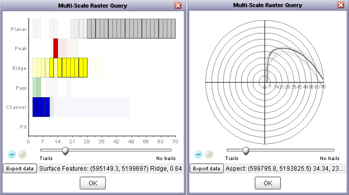
Interactive multi-scale output of feature type (left) and aspect (right) queries.
Curves are updated dynamically as the mouse is dragged over the surface. Old curves can be left on the
display by moving the slider towards the Trails end. Leaving old curves on the graph allows
the spatial variation in scale dependency to be shown as a query area is moved over a surface. They way
in which old query curves are displayed can be controlled by toggling between the
and
buttons. Positive accumulation
means that as successive lines are drawn over the same location, their representation becomes darker.
Negative accumulation means that as curves are replaced with newer ones, they become progressively
lighter. Pressing the 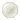 button will
clear the current graph display.
To compare the values of two rasters, select the Info->Scatterplot menu item or the
button. This will plot the
currently selected primary raster as the independent variable on the horizontal axis, and the secondary
surface as the dependent variable on the Y-axis axis. The number of samples taken from the two rasters can be
controlled with the slider. The best-fit straight line along with its equation and R2 value
are also given, and will change dynamically as the number of samples is changed.
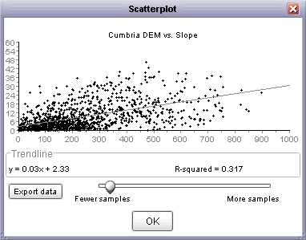
Scatterplot output comparing elevation (X) and slope (Y)
To examine the frequency distribution of a raster, select either the Info->Histogram menu item
or the 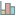 button. This plots a
frequency histogram of the primary raster using its colour table. The class width of the histogram can be
controlled via the slider at the bottom of the graph. Moving the slider to the right increases the width
of each class and therefore decreases the total number of classes. Surfaces that contain large flat areas such as
lakes or sea can produce histograms dominated by the elevation of the flat region. Such areas can be
removed from analysis by ticking the Ignore values at box and supplying an appropriate value or values.
If more than one value is to be ignored, they should be separated by commas.
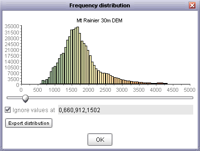
Frequency histogram of elevation surface
Many DEMs exhibit artifacts of the original contour lines that were interpolated to create the surface
model. This can sometimes be detected by examining the frequency distribution of elevation values. For
example, a DEM derived from 10m contour lines may show higher frequencies of 10m, 20m, 30m... elevations
than 5m, 15m, 25m... elevations. This effect can be visualised by plotting the frequency histogram not
of the elevation values directly, but the modulus (remainder) to the base of the suspected contour
interval. To do this, select the Info->Hammock plot menu item. DEMs that show this
effect will result in a 'U' shaped hammock plot. DEMs that do not show this effect will typically show
a rectangular distribution.
Note that large flat areas (e.g. lakes or sea) will significantly affect the hammock distribution,
so as with the frequency histogram, user-defined values can be ignored in the calculation. The modulus
value used for calculation of the plot defaults to 10, but can altered by moving the slider.
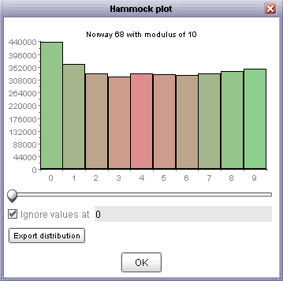
Hammock plot of elevation surface showing bias towards multiples of 10